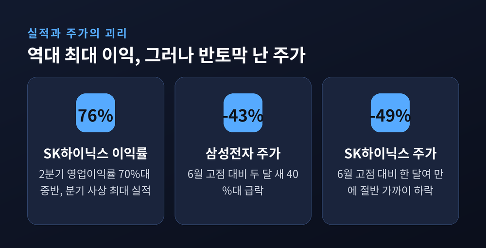
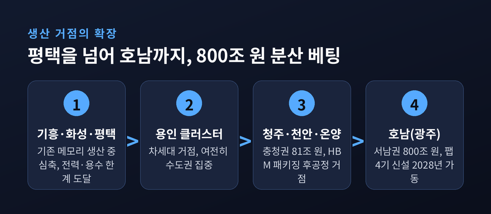
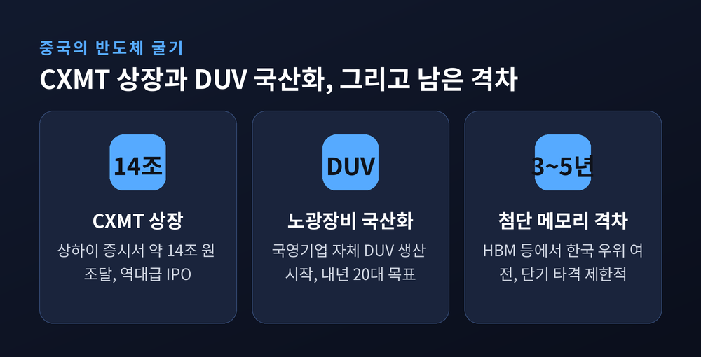
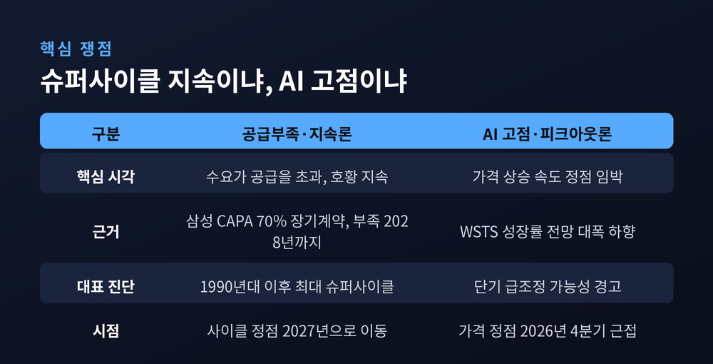
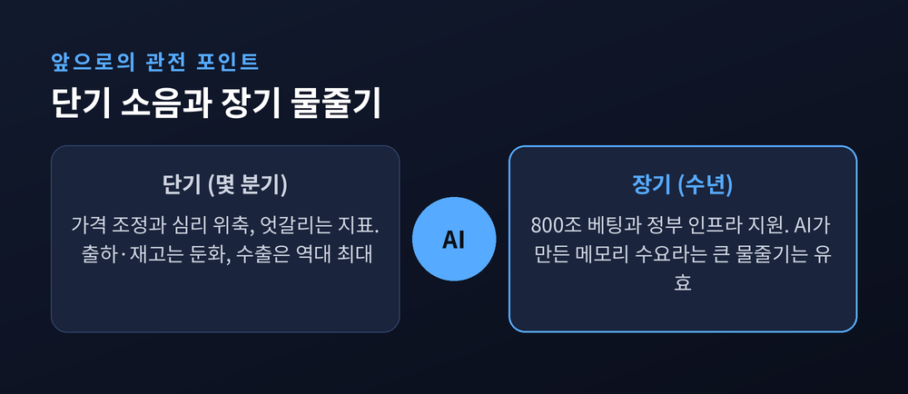

AI 반도체 800조 베팅과 반도체주 조정
사상 최대 실적에도 주가가 급락한 이유
오늘은 한국 반도체 산업의 두 얼굴을 정리해 보겠습니다.
한쪽에서는 사상 최대 실적과 800조 원 규모의 초대형 투자가 발표됐습니다. 다른 한쪽에서는 그 주역인 삼성전자와 SK하이닉스 주가가 한 달여 만에 40~50%씩 빠졌습니다.
같은 회사, 같은 시점에 벌어진 정반대의 신호입니다. 그 간극을 차분히 짚어봅니다.

사상 최대 실적, 그런데 주가는 반토막
먼저 실적입니다.
SK하이닉스는 2026년 2분기에 분기 사상 최대 성적을 냈습니다.
매출 79조 원, 영업이익 60조 원대, 영업이익률은 70%대 중반으로 알려졌습니다.
1조 원어치를 팔면 7,600억 원이 남았다는 뜻입니다.
이 수익성은 엔비디아(65.6%)나 TSMC(60.3%)보다 높은 수준으로 보도됐습니다.
AI 인프라 투자가 몰리면서 HBM과 서버용 D램, 기업용 SSD가 잘 팔린 결과입니다.
삼성전자도 같은 흐름에 올라탔습니다.
HBM4와 2나노 파운드리에 동시에 베팅하며 "AI 슈퍼사이클을 잡겠다"고 밝혔습니다.
그런데 주가는 정반대로 움직였습니다.
삼성전자는 6월 19일 37만 원대 고점을 찍은 뒤 두 달도 안 돼 40% 넘게 빠졌습니다.
SK하이닉스는 6월 25일 298만 원대 고점에서 한 달여 만에 절반 가까이 내렸습니다.
증권가에서는 목표가를 크게 낮추는 곳이 나왔습니다.
"5배, 11배 올랐던 대장주가 한 달 만에 반토막"이라는 표현까지 등장했습니다.
예전엔 실적이 좋으면 주가가 따라 올랐습니다. 지금은 최대 이익을 내고도 주가가 무너지는 국면입니다.

왜 이 괴리가 중요한가
반도체는 한국 수출과 산업생산의 심장입니다.
이 두 회사의 실적과 주가는 곧 한국 경제의 체온계에 가깝습니다.
지금 시장이 던지는 질문은 하나로 모입니다.
"역대 최대 이익인데, 시장은 왜 미래를 어둡게 보는가."
주가는 실적이 아니라 앞날의 기대를 먹고 움직입니다.
이익이 이미 정점에 닿았다면, 다음 걸음은 내리막일 수밖에 없다는 우려입니다.
여기에 세 가지 걱정이 겹쳤습니다.
AI 수요가 고점을 지났다는 '피크아웃' 우려, 중국의 추격, 그리고 낸드플래시 가격 하락 우려입니다.
흥미로운 점은, 바로 그 불안의 한복판에서 사상 최대 규모의 투자가 발표됐다는 것입니다.
평택을 넘어 호남까지 — 800조 원의 지역 분산 베팅
가장 큰 뉴스는 투자의 무대가 넓어졌다는 사실입니다.
삼성전자와 SK하이닉스는 서남권, 즉 호남에 총 800조 원을 투입해 반도체 공장 4기를 짓기로 했습니다.
삼성전자가 광주를 중심으로 약 425조 원, SK하이닉스가 약 470조 원 규모입니다.
삼성전자는 광주 공장을 2028년 첫 가동 목표로 올해 하반기 착공할 계획입니다.
충청권에는 81조 원을 들여 패키징, 즉 후공정 거점을 키웁니다.
삼성의 온양·천안 HBM 공장, SK하이닉스의 청주 HBM 패키징 투자가 여기에 묶입니다.
왜 갑자기 호남일까요.
이유는 단순합니다.
기존의 기흥·화성·평택·이천, 그리고 용인으로 이어지던 생산축이 한계에 부딪혔기 때문입니다.
첨단 공장은 막대한 전력과 물을 먹습니다.
용인과 평택 일대만으로는 그 수요를 감당하기 어려워졌습니다.
그래서 생산 거점이 청주·천안·온양을 지나 호남까지 뻗어 나가는 중입니다.
한곳에 몰아넣는 대신 여러 곳에 나눠 심는 전략인 셈입니다.

정부도 함께 뛴다 — 반도체특별법과 물·전기
이 큰 그림에는 정부의 손길도 얹혀 있습니다.
반도체특별법이 8월 11일 시행을 앞두고 있습니다.
산업통상자원부 장관이 반도체 클러스터를 지정하고, 국가와 지자체가 송전망·용수·도로 같은 기반시설 비용을 우선 지원하는 내용입니다.
핵심 변수는 물입니다.
호남 클러스터에는 하루 약 65만 톤의 용수가 필요하다고 합니다.
반도체 공장도, 곁에 들어설 AI 데이터센터도 엄청난 양의 물과 전기를 씁니다.
그래서 정부와 여당은 물관리기본법·수도법 개정, 전력수급기본계획 수정 같은 후속 입법에 나서고 있습니다.
정부는 균형발전을, 기업은 시장성을 봅니다.
두 셈법이 완전히 같지는 않습니다.
다만 "전기와 물을 깔아주지 못하면 800조 원도 공수표"라는 데는 이견이 없습니다.
중국의 추격 — CXMT 상장과 DUV 국산화
주가를 누른 또 다른 무게는 중국입니다.
중국 메모리 기업 CXMT(창신메모리테크놀로지)가 지난 27일 상하이 증시에 상장했습니다.
초과배정을 포함해 최대 약 14조 4,000억 원을 조달했습니다.
역대 손꼽히는 규모의 기업공개입니다.
여기에 상하이의 한 국영 지원 기업이 자체 개발한 DUV 노광장비 생산을 시작했다는 소식이 겹쳤습니다.
올해 5대, 내년 20대를 목표로 SMIC·화훙반도체·CXMT 등에 공급한다고 합니다.
노광장비는 반도체 회로를 새기는 핵심 장비이자, 그동안 중국의 약한 고리로 꼽히던 분야입니다.
그 빈틈을 스스로 메우기 시작했다는 신호입니다.
다만 균형 잡힌 시선도 필요합니다.
업계의 우세한 평가는 이렇습니다.
HBM 같은 첨단 메모리에서는 한국이 여전히 3~5년가량 앞서 있고, 당장의 타격은 제한적이라는 것입니다.
추격 속도가 빨라진 것은 사실이나, 선두와의 거리는 아직 남아 있습니다.
"미국이 막을수록 중국은 더 강해졌다"는 평가가 나오는 이유이기도 합니다.

HBM 공급부족이냐, AI 고점이냐
결국 모든 논쟁은 하나의 질문으로 수렴합니다.
"이 호황은 계속되는가, 아니면 정점을 지났는가."
두 진영의 목소리가 팽팽합니다.
공급부족을 강조하는 쪽은 슈퍼사이클이 이어진다고 봅니다.
삼성전자는 AI 메모리 부족이 2028년까지 계속될 것으로 보고, 생산능력의 최대 70%를 장기공급계약으로 묶어두는 전략을 택했습니다.
한 대형 투자은행은 지금을 "1990년대 이후 최대의 슈퍼사이클"이라 불렀습니다.
반대로 고점을 경고하는 쪽은 속도를 봅니다.
세계반도체시장통계기구(WSTS)는 7월에 메모리 성장률 전망을 큰 폭으로 낮췄습니다.
모건스탠리는 사흘 간격으로 상반된 두 보고서를 냈습니다.
하나는 "가격 상승 속도가 정점에 가까워 단기 조정이 올 수 있다"였고, 다른 하나는 "이번 하락은 오히려 매력적인 매수 기회"였습니다.
여기서 중요한 구분이 하나 있습니다.
'가격이 오르는 속도의 정점'과 '사이클 자체의 정점'은 다른 이야기입니다.
가격 상승세가 잠시 완만해지는 것과, 수요가 꺾여 무너지는 것은 전혀 다른 국면이라는 뜻입니다.
시장은 지금 이 둘을 두고 저울질하는 중입니다.

앞으로 어떻게 될까
정리하면 이렇습니다.
실적은 정점 부근에서 사상 최대를 찍었고, 주가는 미래를 먼저 걱정하며 내려앉았습니다.
투자는 평택을 넘어 호남까지 넓어졌고, 중국은 상장과 장비 국산화로 추격의 속도를 올렸습니다.
단기적으로는 가격 조정과 심리 위축이 이어질 수 있습니다.
7월 지표도 엇갈립니다. 출하와 재고 지표는 둔화를 가리키는데, 반도체 수출은 역대 최대를 기록했습니다.
같은 달 안에서도 방향이 갈리니, 섣부른 단정은 이릅니다.
다만 장기 그림은 조금 더 또렷합니다.
800조 원의 베팅과 정부의 인프라 지원은 최소 몇 년 앞을 내다본 결정입니다.
호황의 속도는 늦춰질 수 있어도, AI가 만든 메모리 수요라는 큰 물줄기 자체가 곧바로 마르지는 않을 것이라는 시각이 우세합니다.

이 글은 반도체 산업과 시장 상황을 이해하기 위한 정보 정리이며, 특정 종목의 매수·매도를 권하는 투자 권유가 아닙니다. 실적·주가 수치는 보도 시점과 매체에 따라 차이가 있을 수 있으니, 투자 판단은 반드시 본인의 책임과 최신 정보 확인 아래 신중히 하시기 바랍니다.
끝으로 한 마디만 더 드리겠습니다.
지금 반도체를 둘러싼 소음은 크지만, 그 밑에서 벌어지는 일은 의외로 단순합니다.
— 세계에서 가장 잘 파는 기업이, 가장 불안한 눈길 속에서, 가장 큰 베팅을 하고 있습니다.
이 역설이 어떤 결말로 이어질지는, 다음 몇 분기의 숫자가 조용히 말해줄 것입니다.
참고 소스
- SK하이닉스 뉴스룸 / 디일렉 / 전자신문 / 머니투데이 — 2026년 2분기 실적 (2026-07)
- 글로벌이코노믹 / 이투데이 / 서울경제 — 반도체주 7월 조정 (2026-07)
- 아주경제 / 디일렉 / 삼성 뉴스룸 / 파이낸셜뉴스 — 호남 800조 투자·정부 지원 (2026-06~07)
- 아주경제 / 헤럴드경제 — CXMT 상장·DUV 국산화 (2026-07-28)
- 비즈워치 / Seoul Economic Daily(모건스탠리) / WSTS — HBM 공급·고점 논쟁 (2026-07)